(10 min. read)
5 years ago today,
Skullbriar, the Walking Grave 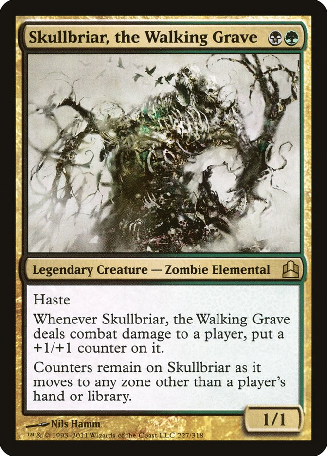 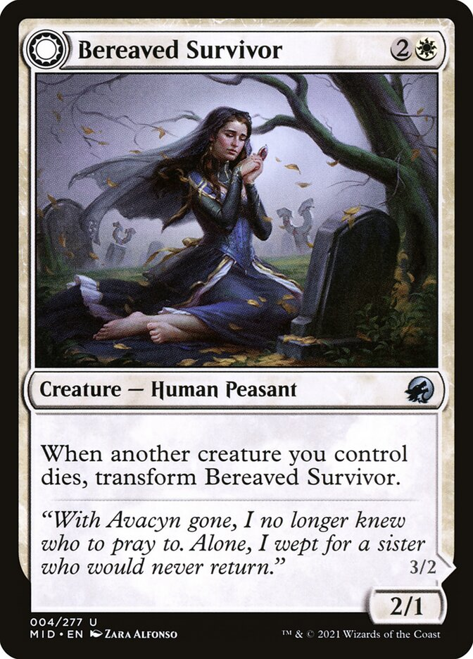 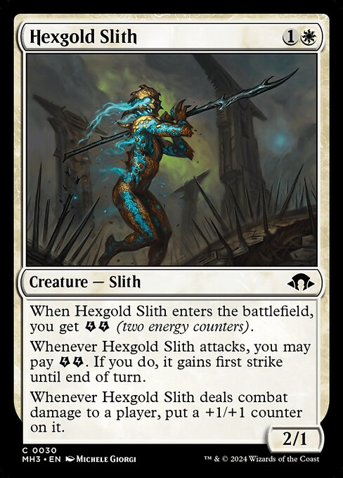
Skullbriar was many things to many people— A coworker, a friend, a father, but to Bereaved Survivor , he was a loving and supportive husband.
As a young man, Skullbriar served his country in the Vietnam War. 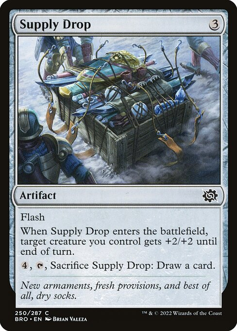 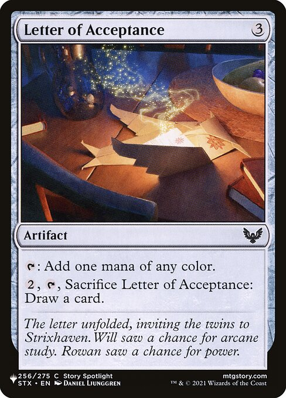 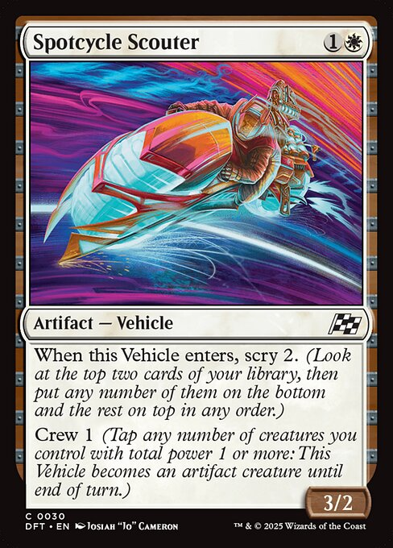 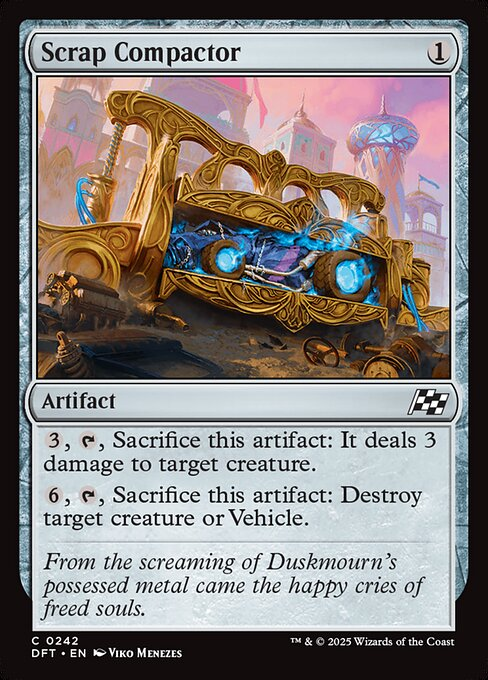 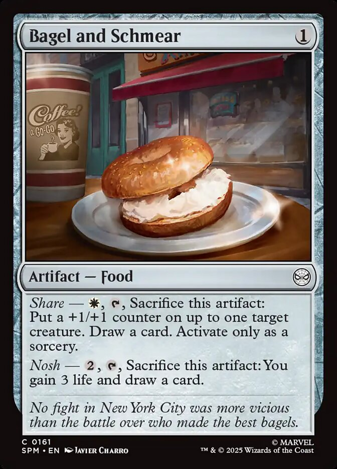
The Skullbriar household was a place of laughter and joy. Anyone visiting the house would hear the kids cackling with joy as they played with their their
favorite 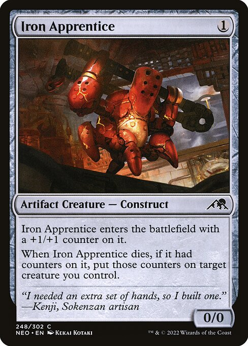 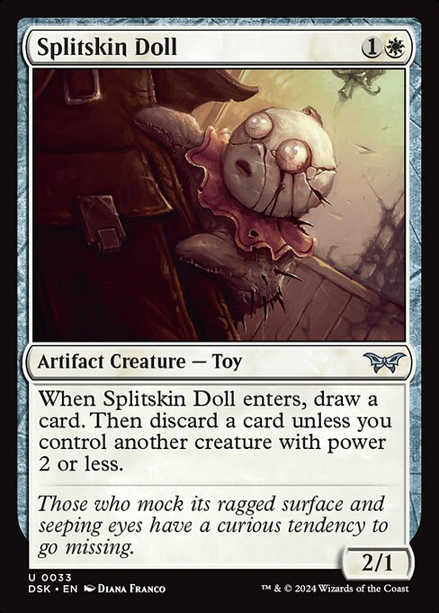 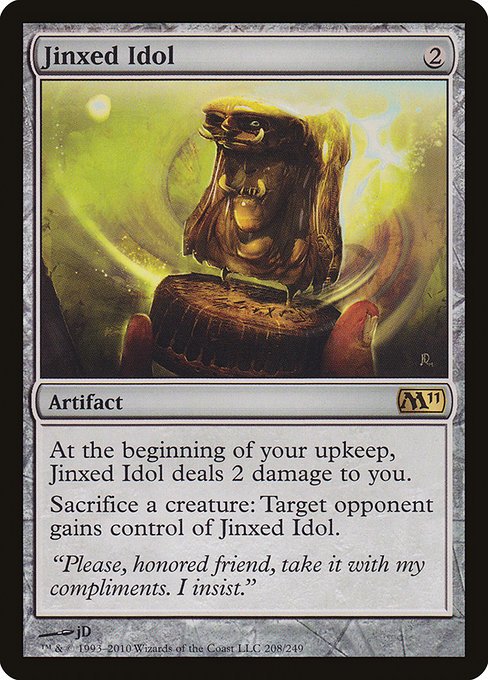 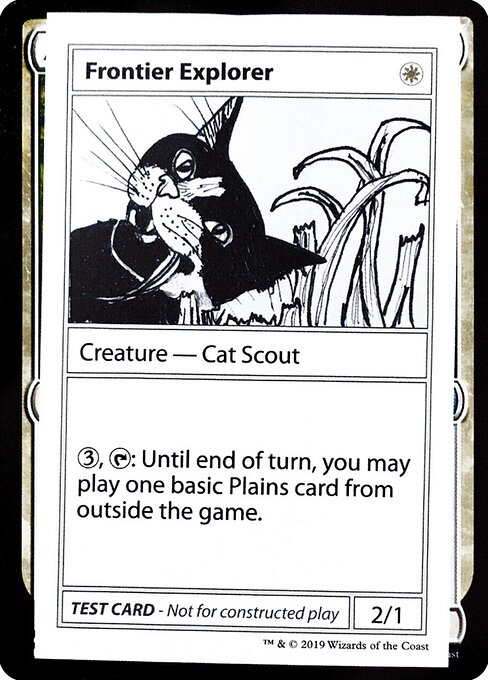
Skullbriar would tell coworkers of his dreams of moving to the countryside one day. He said he always wanted to become a cattle rancher. His death was tragic, but ultimately,
it was how he would've wanted to go. 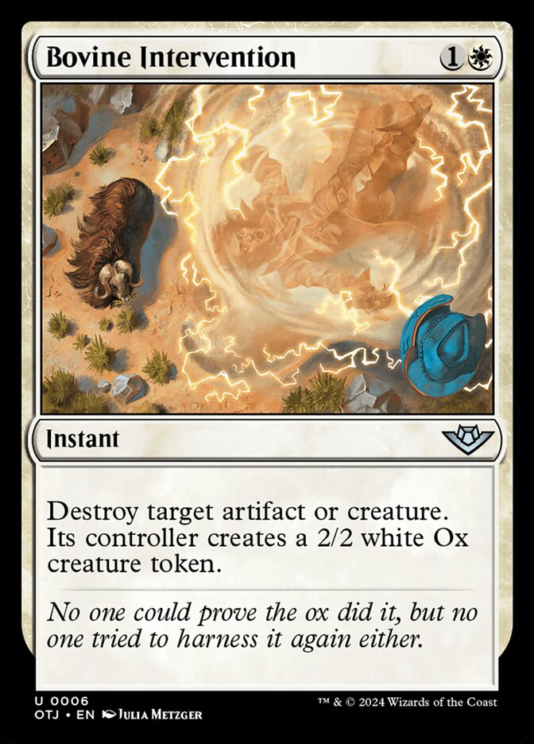
The funeral for Bereaved Survivor is to be held at The Fair Basilica 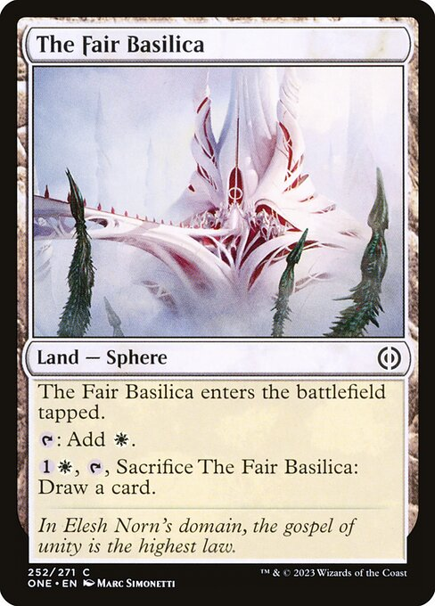
A Eulogy for Skullbriar and his Wife is a 1v1 shared deck Magic format inspired by Dandan. This type of format trims all of Magic's card pool into a curated experience. A unique game is made using pieces of an existing game, not unlike video game mods. As you noticed, this format also has some silly lore that emerged organically during design.
The Dandan format is named after the iconic creature, but what really made it unique was Memory Lapse. Because both players use a single shared deck, memory lapse functions more like a weird draw spell rather than straight removal. When an important spell is hit by memory lapse, it goes to the top of the deck where now you'll probably draw it on your turn.
A Eulogy of Skullbriar and His Wife set itself apart from Dandan by not focusing the shared library, but shared graveyard. Skullbriar the Walking Grave is potentially the most important creature on the board, so when he is killed both players are in a race to resurrect him first.
When designing a game, it's easy to hyperfocus on your source of inspiration. Considering how many versions of "Dandan but with Lightning Bolts" I've seen this must be especially common with Dandan inspired formats. Personally, while my brother and I worked on this format I struggled with draw spells. Draw was very important in Dandan, but our design never felt like it was going in that direction. My right brain wanted to include more draw, while my left brain told me to ignore them. I made the most progress when I stopped trying to one-for-one replace every part of Dandan. I just made a clean break and started playtesting with friends.
Did you notice a pattern when I was describing Skullbriar and Dandan? Dandan is about Memory Lapse (an instant) interacting with a shared library, while this format is Skullbriar (a creature) interacting with a shared graveyard. They both are “X Card plus shared Y”. Maybe there’s a useful heuristic here? You know what? Here's a 2d8 table to spark inspiration.
Let's give this table a rip.
Looking at the table, 5 & 5 means sorcery plus shared nonlands. Ok, whenever a player casts a nonland it goes into a shared battlefield. And the key card is a sorcery. Maybe… Sweltering Suns? Creatures are shared between players, but anyone can wipe the board? And 4 toughness creatures are key because they survive the board wipe. We might be getting somewhere.
A funny quirk is that if you play a creature, your opponent is the first to attack with it because it loses summoning sickness on their turn. This effectively makes aggro impossible. And because all creatures are shared the only creatures that can block are defenders. So lets add with one of them. And while i'm at it i'll add a creature the wall can successfully block.
So far it seems the game is about making sure there’s more 2/2s on the board during your turn and more defenders on your opponent’s turn. Crazy idea: both players start at 1 life? Now the game is all about that one good turn. All it takes is one good attack to win. A visual aesthetic is also starting to form here, maybe it’s the end of the world with fire raining from the sky. The werewolf is interesting because it if flips it can kill the wall, so controlling when the werewolf flips is important.
With only 1 life this is very all-gas-no-brakes. I’m worried it won’t be interactive, just players dumping their hand, but of course if you just dump your hand your opponent will have those resources too. I can’t tell if there’s anything cool here. But I know I won't know for sure unless I playtest it. This wall is really boring though, so for the readers edification i've including some other cool defenders that could replace it.
Larder zombie is neat because this format still has a shared library, so controlling the top card is important. Note: If you tap the zombie your opponent can't use it to block your creature, but there need to be four creatures in play for that to happen.
If four of these are in play it pseudo softlocks the game because a single flipped werewolf will never break throgh. (The first strike will mean it never gets to deal damage and kill a wall). Maybe cycling makes this interesting?
Play this and let your opponent gain a life if they have a land? Dangerous considering everyone starts at 1 life.
So there’s an example of how to use the Dandan Inspired Formats table. If you want to know more about specifically A Eulogy for Skullbriar and his Wife you should check out the Cube Cobra page.